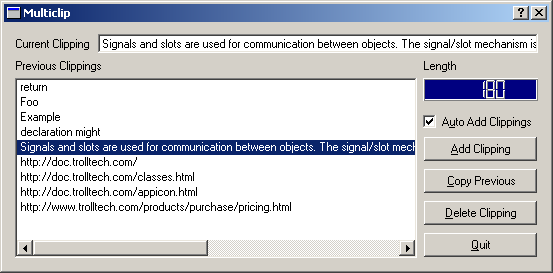

| Home | All Classes | Main Classes | Annotated | Grouped Classes | Functions |
[Prev: Preface] [Home] [Next: Creating Main Windows with Actions, Toolbars and Menus]
Qt Designer is controlled in the same way as any other modern desktop application. To start Qt Designer under Windows click the Start button and click Programs|Qt X.x.x|Designer. (X.x.x is the Qt version number, e.g. 3.0.0.) If you're running a Unix or Linux operating system you can either double click the Qt Designer icon or enter designer & in an xterm.
When you've finished using Qt Designer click File|Exit; you will be prompted to save any unsaved changes. Help is available by pressing F1 or from the Help menu.
To get the most benefit from the tutorial chapters we recommend that you start Qt Designer now and create the example applications as you read. Most of the work involves using Qt Designer's menus, dialogs and editors, with only small amounts of code to type in.
When you start Qt Designer, by default, you will see a menu bar and various toolbars at the top. On the left hand side are three windows, the first is the Files window, the second is the Widgets and Source window (the Object Explorer) and the third is the Properties window. The Files window lists the files and images associated with the project; to open any form single click it in the Files list. The Widgets and Source window lists the current form's widgets and slots. The Properties window is used to view and change the properties of forms and widgets. We will cover the use of Qt Designer's windows, dialogs, menu options and toolbar buttons as we create example applications.
In this chapter we will build an application called 'multiclip' which allows you to store and retrieve multiple text clippings to and from the clipboard.

The Multiclip Application
Whenever you create a new application we strongly recommend that you create a project file and open the project rather than individual .ui files. Using a project has the advantage that all the forms you create for the project are available via a single mouse click rather than having to be loaded individually through file open dialogs. An additional benefit of using project files is that they allow you to store all your images in a single file rather than duplicate them in each form in which they appear. See The Designer Approach chapter's Project management section for detailed information on the benefits of using project files.
Start Qt Designer if you haven't already. Click File|New to invoke the New File dialog. Click the 'C++ Project' icon, then click OK to invoke the Project Settings dialog. You need to give the project a name, and we recommend that you put each project in its own subdirectory. Click the ellipsis ... button to invoke the Save As dialog and navigate to where you want to put the new project. Click the Create New Folder toolbar button to create the 'multiclip' directory. Double click the 'multiclip' directory to make it the current directory. Enter a file name of 'multiclip.pro', and click the Save button. The 'Project File' field of the Project Settings dialog will have the path and name of your new project; click OK to create the project.
Creating a New Project
The name of the current project is shown in the Files toolbar which is the top left toolbar by default. Once we have a project we can add forms and begin to build our application. (See Customizing Qt Designer for information on changing Qt Designer's toolbars and windows to suit your preferences.)
Click File|New to invoke the New File dialog. Several default forms are supplied but we will use the default Dialog form, so just click OK. A new form called 'Form1' will appear. Note that the new form is listed in the Files list and the Properties window shows the form's default property settings.
Click the Value beside the name property and change the form's name to 'MulticlipForm'. Change the form's caption to 'Multiclip'. The properties are ordered in accordance with the inheritance hierarchy, and caption is roughly in the middle of the property editor. Save the form: click File|Save, enter the name 'multiclip.ui', then click the Save button.
Creating a New Form
Using the Property Editor
The Property Editor has two columns, the Property column which lists property names and the Value column which lists the values. Some property names have a plus sign '+' in a square to their left; this signifies that the property name is the collective name for a set of related properties. Click the form to make the Property Editor show the form's properties. Click the sizePolicy property's plus sign; you will see four properties appear indented below sizePolicy, hSizeType, vSizeType, horizontalStretch and verticalStretch. These properties are edited in the same way as any other properties.
Property Editor
Some properties have simple values, for example, the name property has a text value, the width property (within minimumSize for example) has a numeric value. To change a text value click the existing text and type in your new text. To change a numeric value click the value and either type in a new number, or use the spin buttons to increase or decrease the existing number until it reaches the value you want. Some properties have a fixed list of values, for example the mouseTracking property is boolean and can take the values True or False. The cursor property also has a fixed list of values. If you click the cursor property or the mouseTracking property the value will be shown in a drop down combobox; click the down arrow to see what values are available. Some properties have complex sets of values; for example the font property. If you click the font property an ellipsis button (...) will appear; click this button and a Select Font dialog will pop up which you can use to change any of the font settings. Other properties have ellipsis buttons which lead to different dialogs depending on what settings the property can have. For example, if you have a lot of text to enter for a text property you could click the ellipsis button to invoke the multi-line text editor dialog.
The names of properties which have changed are shown in bold. If you've changed a property but want to revert it to its default value click the property's value and then click the red 'X' button to the right of the value. Some properties have an initial value, e.g. 'TextEdit1', but no default value; if you revert a property that has an initial value but no default value (by clicking the red 'X') the value will become empty unless the property, e.g. name, is not allowed to be empty.
If multiple widgets are selected, the property editor shows the properties that the selected widgets have in common. Changing one of these properties will cause all the selected widgets to have this property changed.
The property editor fully supports Undo and Redo (Ctrl+Z and Ctrl+Y, also available from the Edit menu).
The multiclip application consists of a text box to display the current clipboard text (if any), a list box showing the previous clippings, a length indicator, a checkbox and buttons. If you run the application and resize it all the widgets will scale properly.
The Qt Designer approach to laying out a form is to place the required widgets on the form in the approximate positions that they should occupy and then use the layout tools to size and position them correctly. We'll now add the multiclip form's widgets.
We'll start with the current clipping text box. Click the Text Label toolbar button and click towards the top left of the form. (If you hover the mouse over a toolbar button its name will appear in a tooltip.) We won't bother renaming the label since we'll never refer to it in code; but we need to change its text, so change its text property to 'Current Clipping'. (See the Using the Property Editor sidebar for an explanation of the property editor.)
Click the Line Edit toolbar button and click towards the top right of the form. Use the Property Editor to change the widget's name to 'currentLineEdit'.
Now we'll add another label and the list box. Click the Text Label toolbar button and click below the Current Clipping label. Change the text property to 'Previous Clippings'. Don't worry about positioning the widgets precisely, nor about the fact that they are the wrong size; the layout tools (covered in the next section) will take care of this.
Click the List Box toolbar button and click the form below the 'Previous Clippings' label. Change the list box's name to 'clippingsListBox'. By default Qt Designer creates list boxes with a single initial value of 'New Item'. We don't want this value (we'll be populating our list box in code later), so we need to remove the value. Right click the list box then click the Edit menu item on the popup menu to invoke the listbox's value editor dialog. Click Delete Item to delete the default item, then click OK. (See the Value Editors sidebar.)
We want to know the length of the current clipping so we'll add a label and an LCD Number widget.
Click the Text Label toolbar button and click below the Line Edit. Change its text property's value to 'Length'. Click the LCD Number toolbar button and click below the length label. Change the LCD Number's name to 'lengthLCDNumber'.
Multiclip can be made to detect clipboard changes and automatically add new clippings. We want the user to have control over whether this should happen or not so we will provide a check box which they can use to indicate their preference.
Click the Check Box toolbar button and click below the LCD Number. Change the checkbox's name to 'autoCheckBox' and its text to 'A&uto Add Clippings'. Note that the accel property automatically changes to Alt+U because the ampersand in the text signifies a keyboard shortcut.
The last widgets we require are the buttons. One way to add the same kind of widget multiple times is to add one, copy it, then paste repeatedly. We will use another approach.
Double click the Push Button toolbar button; now click below the checkbox to place a button. Click below the button we've just added to add a second button. Add a third and fourth button. Now click the Pointer toolbar button to switch off automatically adding the same widget. Change the first button's name to 'addPushButton' and its text to '&Add Clipping'. Change the second button's name to 'copyPushButton' and its text to '&Copy Previous'. Change the third button's name and text properties to 'deletePushButton' and '&Delete Clipping' respectively. Similarly change the fourth button's name and text to 'quitPushButton' and '&Quit'.
All our widgets have been placed on the form with their properties changed to suit our application's needs. In the next section we will use Qt Designer's layout tools to size and position the widgets correctly and in such a way that when the user resizes the form the widgets will scale properly.
Adding Widgets to the Form
Value Editors
Whilst the Property Editor is used to customize the generic properties of widgets, value editors are used to edit values held within instances of particular widgets. For example a QLineEdit can only contain a single line of text, but a QListBox can contain any number of items each of which may be a line of text, a pixmap, or both. To invoke a widget's value editor double click the widget. (Alternatively right click the widget and a popup menu will appear; if the first menu item is 'Edit', you can click this to access the widget's value editor dialog.) Different widgets have different value editors. See the Value Editors chapter for more details.
Layouts work by grouping together widgets and groups of widgets, horizontally, vertically or in a grid. Widgets that are laid out together horizontally or vertically can be grouped either with a Layout or with a Splitter; the only difference is that a user can manipulate a Splitter themselves.
If we want to lay out some widgets side by side we would select them and then click the Lay Out Horizontally toolbar button. If we want our widgets to be lined up one above the other we would use the Lay Out Vertically toolbar button. Once we've grouped some widgets together we can then lay out the groups in relation to each other, again using vertical, horizontal or grid layouts. Once we have a collection of laid out groups we then click on the form itself and lay out the groups within the form using one of the layout buttons.
Some widgets will grow to fill the available space, vertically or horizontally or both ways. Buttons and line edits will fill horizontal space for example, whereas a ListView will fill space in both directions. The easiest way to achieve the layout you want is to use Qt Designer's layout tools. When you apply a layout to some widgets in some situations the widgets may not lay out the way you want. If a widget does not fill up enough space try changing its sizePolicy to Expanding. If a widget takes up too much space one approach is to change its sizePolicy, and another approach is to use a Spacer to consume excess space.
Spacers have no visual appearance on the running form and are used purely to insert space between widgets or groups of widgets. Suppose you have a widget that takes up too much space. You could break the layout and resize the widget to make room for a spacer. Then you would insert the spacer and layout the spacer with the widgets and the spacer will consume the excess space. If the spacer doesn't take up the right amount of space you can change its sizePolicy for finer control.
The best way to learn about layouts and spacers is to try them out. Experimenting with layouts is easy. If you make any changes that you aren't happy with you can easily undo them by clicking Edit|Undo or by pressing Ctrl+Z. In the next section we'll lay out our multiclip example step-by-step.
Layouts provide a means of grouping widgets and groups of widgets together in horizontal and vertical pairs and in grids. If you use layouts your forms and the widgets they contain will scale automatically when the user resizes the window. This is better than using absolute sizes and positions since you don't have to write any code to achieve the scaling and your users can make the most of their screen size whether they have a laptop or a very large screen desktop machine. Layouts use standard sizes for margins and widget spacing which helps give your applications a consistent and proportional look without requiring any effort on your part. Layouts are also easier and faster to use than absolute positioning; you can just place your widgets on the form in approximate positions and leave the layout tools to size and scale the widgets correctly.
Selecting Widgets and Inserting Widgets
To select an individual widget, either click the widget itself or click its Name in the Object Explorer window. To select a group either click a fraction outside its red outline or click its Name in the Object Explorer window. To select multiple widgets or groups, click the form to deselect any selected widgets, then Ctrl+Click one widget or group then drag the rubber band so that it touches the other widgets or groups that you want to select. This technique is particularly useful for selecting widgets that are inside another widget. For example to select the radio buttons in a button group but not the button group itself you would click the form then Ctrl+Click one of the radio buttons and drag the rubber band to touch the other radio buttons.
If we want to insert a widget into a gap between widgets which are in a layout we can click the toolbar button for the new widget and then click in the gap. Qt Designer will ask us if we want to break the layout and if we click Break Layout the layout will be broken and our widget inserted. We can then select the widgets and groups we want to lay out and lay them out again. The same effect can be achieved by clicking the group and either clicking the Break Layout toolbar button or pressing Ctrl+B.
The layout we want to achieve is to have the current clipping label and currentLineEdit side by side at the top of the form. We want the previous clippings label and the clippingsListBox to occupy the left hand side of the form with the remaining widgets in a column on the right. We want to divide left and right with a splitter and make the left hand side larger by default. We'll leave the sizing of the widgets to Qt Designer. The layout controls are in the Layout toolbar. (By default this is the fourth toolbar counting left to right.) We'll now lay out the widgets we've placed on the form.
Click the current clipping label and Shift+Click the currentLineEdit Line Edit. (Shift+Click means hold down the shift key whilst clicking; this will ensure that Qt Designer performs multiple selections.) Most of the layout toolbar buttons will now be available. Click the Lay Out Horizontally toolbar button. (If you hover the mouse over a toolbar button a tooltip giving the button's name will appear.) The two widgets will be moved together with a thin red line surrounding them. It doesn't matter that the widgets aren't the right size or in exactly the right place; as we progress with the layout Qt Designer will size and place them correctly.
Layout Current Clipping Label and currentLineEdit
Click the Previous Clippings label and Shift+Click the clippingsListBox. Click the Lay Out Vertically toolbar button.
We want the remaining widgets to be grouped together vertically. We could Shift+Click each one but instead click the form above the Length label, then drag until the Length label, the LCD Number, the check box and all the buttons are all touching the rubber band (a black outline rectangle) that appears when you drag. Release the mouse, and all the remaining widgets should be selected. If you missed any Shift+Click them. Now click the Lay Out Vertically toolbar button.
Selecting a Group of Widgets
We now have three groups of widgets which must be laid out in relation to each other and then laid out in relation to the form itself.
Groups of Layed Out Widgets
Shift+Clicking is used to select individual widgets. To select a group we must click the form to deselect any selected widgets, then Ctrl+Click the group and drag so that the rubber band touches the groups we want to lay out and then release. With the buttons and other widgets already laid out and selected, Ctrl+Click the list box and drag the rubber band over the one of the buttons, then release. Both groups should now be selected. Click the Lay Out Horizontally (in Splitter) toolbar button.
Layout Groups of Widgets
We now have two groups, the top one with the Current Clipping label and the line edit and the group we've just created with the list box, buttons and other widgets. We now want to lay these out in relation to the form. Click the form and click the Lay Out Vertically toolbar button. The widgets will be resized to fill the entire form.
Lay out Widgets in Relation to the Form
Unfortunately the Length label and the LCD Number take up far too much space, so we will have to revise the layout. With experience you will find that you do not need to rework layouts very often. We will insert a spacer which will use the extra space.
First we must make some room for the spacer. Click the LCD Number to select it. Now click the Break Layout toolbar button. Move the LCD Number up a little bit, there's no need to be exact we just want to create some space below it.
Now we'll add the spacer. Click the Spacer toolbar button, then click the form in the space you've created between the LCD Number and the check box. A popup menu with two options, Horizontal and Vertical, will appear; click Vertical. We choose vertical because we want the spacer to consume excess vertical space.
Adding a Vertical Spacer
We need to regroup the buttons and other widgets in a vertical group. Drag the mouse from near the bottom right of the form so that the rubber band includes or touches the buttons, the check box, the spacer, the LCD Number and the Length label; then release. If you selected any other widgets by mistake, click the form and try the drag again. Click the Lay Out Vertically toolbar button.
We now have three groups as we had before, only this time with the small addition of the spacer. Select the list box and the buttons by clicking the form, dragging and releasing once the rubber band covers or touches both groups. Click Lay Out Horizontally (in Splitter) to regroup them with the splitter.
The last step is to lay out the form itself. Click the form and click Lay Out Vertically. The form should now be laid out correctly.
Lay Out the Form
There are two small deficiencies in the layout that we have achieved. Firstly the list box and buttons take up an equal width whereas we'd rather have the list box take up about three quarters of the width. Secondly the Length label, the check box and the buttons extend right up to the splitter. They would look more attractive if there was a little bit of space separating them from the splitter.
Expanding the list box half of the splitter would require us to add an init() function with the following code:
void MulticlipForm::init()
{
QValueList< int > sizes;
sizes << 250 << 40;
Splitter->setSizes( sizes );
}
We won't add this code now since we'll deal with the code when we come to implement the application's functionality later in the chapter.
We will create some space around the splitter by changing the margins of the layout groups that it joins together. To click a layout either click a fraction above the layout's top red line or click the layout's name in the Object Explorer (the Widgets and Source window). (See Object Explorer Window sidebar for an explanation of the Object Explorer window.) Click the layout that contains the list box, and change the layoutMargin property to 6, then press Enter. Click the layout that contains the buttons and other widgets, and change its layoutMargin to the same value in the same way.
The Object Explorer
View the Object Explorer (Widgets and Source) window by clicking Window|Views|Object Explorer. The Object Explorer has two tabs, the Widgets tab which shows the object hierarchy, and the Source tab which shows the source code you have added to the form. Clicking the name of a widget in the Widget tab will select the widget and show its properties in the Property Editor. It is easy to see and select widgets in the Object Explorer which is especially useful for forms that have many widgets or which use layouts.
Object Explorer
In the original version of Qt Designer if you wanted to provide code for a form you had to subclass the form and put your code in the subclass. This version fully supports the subclassing approach, but now provides an alternative: placing your code directly into forms. Writing code in Qt Designer is not quite the same as subclassing, for example you cannot get direct access to the form's constructor or destructor. If you need code to be executed by the constructor create a slot called void init(); if it exists it will be called from the constructor. Similarly, if you need to be executed before destruction create a slot called void destroy(). You can also add your own class variables which will be put in the generated constructor's code, and you can add forward declarations and any includes you require. To add a variable or declaration right click the appropriate item, e.g. Class Variables, then click New then enter your text, e.g. QString fileName. If one or more items exist right clicking will popup a two item menu with New and Delete as options. To edit code just click the name of a function to invoke the code editor. Code editing and creating slots are covered later.
If you subclass the form you create your own .cpp files which can contain your own constructor, destructor, functions, slots, declarations and variables as your requirements dictate. (See Subclassing for more information.)
In the example we used Qt Designer's layout tools to lay out our widgets. We will use the layout tools again in the examples presented in later chapters. If you want to use absolute positioning, i.e. to place and size your widgets with exact pixel sizes you can easily do so. To place a widget click it and drag it to the desired position. To resize it, click it, and drag one of the sizing handles (these are small blue squares) until the size is right. To stop the widget from resizing when the window is resized change the hSizeType and vSizeType (these are properties within the sizePolicy property), to Fixed.
Although Qt Designer presents an accurate view of our forms we often want to see what a form looks like when it is run. It is also useful to be able to test out some aspects of the form, for example how the form scales when resized or how the splitters work in practice. If we're building multiplatform applications it is also useful to see how the form will look in different environments.
To see a preview either click Preview|Preview Form or press Ctrl+T. To leave preview mode close the window in the standard way for your environment. To view previews which show how the application will look on other platforms click the Preview menu and click one of the menu items that drop down.
Preview the multiclip form and try out the splitter and try resizing the form. In all probability you moved the splitter to the right to reduce the size of the buttons to make the form more attractive. The splitter seemed like a good idea but in practice we want the buttons and the other widgets on the right hand side to take up a fixed amount of space. Qt Designer makes changing layouts very easy, so we'll fix this straight away.
Previewing Multiclip
Click the splitter then click the Break Layout toolbar button; the splitter will be removed. Now click the form itself, near the bottom, and drag the rubber band so that it touches both the list box and some of the buttons, then release. The list box group and the buttons group are selected; click the Lay Out Horizontally toolbar button. Click the form then click the Lay Out Vertically toolbar button. The form is now laid out as we require. Preview the form (press Ctrl+T) and try resizing it.
It would be useful if you experimented further with layouts since they work visually and are best learnt through practice. To remove a layout click the Break Layout toolbar button; to apply a layout select the relevant widgets or groups and click a layout button. You can preview as often as you like and you can always undo any changes that you make.
Let's try an experiment, to see how the grid layout works. Click the list box, then press Ctrl+B (break layout). Click one of the buttons and press Ctrl+B. Click the form at the bottom and drag until all the widgets are touching or within the rubber band, (but excluding the Current Clipping label and the currentLineEdit line edit); then release. Press Ctrl+G (lay out in a grid). Click the form, then click Ctrl+L (lay out vertically). Our original design is back -- but this time using a grid layout.
Keyboard users press the Tab key to move the focus from widget to widget as they use a form. The order in which the focus moves is called the tab order. Preview multiclip (press Ctrl+T) and try tabbing through the widgets. The tab order may not be what we want so we'll go into tab order mode and change it to the order we want.
When you click the Tab Order toolbar button a number in a blue circle will appear next to every widget that can accept keyboard focus. The numbers represent each widget's tab order, starting from 1. You change the tab order by clicking the widgets in the order you want to be the new tab order. If you make a mistake and need to start again, double click the widget you want to be first, then click the other widgets in the required order as before. When you've finished press Esc to leave tab order mode. If you made a mistake or preferred the previous tab order you can undo your changes by leaving tab order and undoing (press Esc then Ctrl+Z).
Click the Tab Order toolbar button, then click the current clipping Line Edit -- even if it is already number one in the tab order. Next click the previous clipping ListBox, then the auto add clippings CheckBox. Click each button in turn from top (add clipping) to bottom (quit). Press Esc to finish tab order mode, then preview the form and try tabbing through the widgets.
Note that you can stop clicking if the tab order numbers for all the widgets is correct; just press Esc to leave tab order mode.
Setting the Tab Order
Qt provides the signals and slots mechanism for communicating between widgets. Signals are emitted by widgets when particular events occur. We can connect signals to slots, either pre-defined slots or those we create ourselves. In older toolkits this communication would be achieved using callbacks. (For a full explanation of Qt's signals and slots mechanism see the on-line Signals and Slots documentation.)
Some of an application's functionality can be obtained simply by connecting pre-defined signals and slots. In multiclip there is only one pre-defined connection that we can use, but in the richedit application that we'll build in Creating Main Windows with Actions, Toolbars and Menus we will use many pre-defined signals and slots to get a lot of the functionality we need without having to write any code.
We will connect the Quit button's clicked() signal to the form's accept() slot. The accept() slot notifies the dialog's caller that the dialog is no longer required; since our dialog is our main window this will close the application. Preview the form (press Ctrl+T); click the Quit button. The button works visually but does nothing. Press Esc or close the preview window to leave the preview.
Click the Connect Signals/Slots toolbar button. Click the Quit button, drag to the form and release. The Edit Connections dialog will pop up. The top left hand list box lists the Signals that the widget we've clicked can emit. At the top right is a combobox which lists the form and its widgets; any of these are candidates for receiving signals. Since we released on the form rather than a widget the slots combobox shows the form's name, 'MulticlipForm'. Beneath the combobox is a list box which shows the slots available in the form or widget shown in the combobox. Note that only those slots that can be connected to the highlighted signal are shown. If you clicked a different signal, for example the toggled() toggled() signal, the list of available slots would change. Click the signal, then click the The connection will be shown in the Connections list box. Click OK.
Connecting the clicked() Signal to the accept() Slot
We will make lots of signal/slot connections as we work through the examples, including connections to our own custom slots. Signal/slot connections (using pre-defined signals and slots) work in preview mode. Press Ctrl+T to preview the form; click the form's Quit button. The button now works correctly.
In the first version of Qt Designer you could create the signatures of your custom slots and make the connections, but you could not implement your slots directly. Instead you had to subclass the form and code your slots in the subclass. The subclassing approach is still available, and makes sense in some situations. But now you can implement your slots directly in Qt Designer, so for many dialogs and windows subclassing is no longer necessary. (Qt Designer stores the slot implementations in a .ui.h file; see The ui.h extension approach in The Designer Approach chapter for more about these files.)
The multiclip application requires four slots, one for each button, but only three need to be custom slots since we connected a signal to a pre-defined slot to make the Quit button functional. We need a slot for the Add Clipping button; this will add the current clipping to the list box. The Copy Previous button requires a slot which will copy the selected list box item to the current clipping line edit (and to the clipboard). The Delete Clipping button needs a slot to delete the current clipping and the current list box item. We will also need to write some initialization code so that when the application starts it will put the current clipboard text (if any) into the line edit. The code is written directly in Qt Designer; the snippets are taken from the generated qt/tools/designer/examples/multiclip/multiclip.ui.h file.
We'll need Qt's global clipboard object throughout the code which would mean calling QApplication::clipboard() or qApp->clipboard() in several places. Rather than perform all these function calls we'll keep a pointer to the clipboard in the form itself. Click the Source tab of the Object Explorer. (If the Object Explorer isn't visible click Window|Views|Object Explorer.) The Source tab shows us the functions in our form, the class variables, the forward declarations and the names of the include files we've asked for.
Right click the Class Variables item (near the bottom; you may have to click the scrollbar), then click New on the popup menu. (If there had been any existing variables the popup menu would also have a Delete option.) Type in 'QClipboard *cb;' and press Enter. We will create an init() function in which we will assign this pointer to Qt's global clipboard object. We also need to declare the clipboard header file. Right click Includes (in Declaration), then click New. Type in '<qclipboard.h>' and press Enter. Since we need to refer to the global application object, qApp, we need to add another include declaration. Right click Includes (in Implementation), then click New. Type in '<qapplication.h>' and press Enter. The variable and declarations will be included in the code generated from Qt Designer's .ui file.
We will invoke Qt Designer's code editor and write the code.
We'll create the init() function first. One way of invoking the code editor is to click the Source tab, then click the name of the function you want to work on. If you have no functions or wish to create a new function you need to use the Source tab. Right click the 'protected' item in the Source tab's Slots list, then left click New to launch the Edit Slots dialog. Change the slot's name from 'newSlot' to 'init()' then click OK. You can then click inside the editor window that appears to enter your code.
Note that you are not forced to use Qt Designer's code editor; so long as you add, delete and rename your slots all within Qt Designer, you can edit the implementation code for your slots using a separate external editor and Qt Designer will preserve the code you write.
void MulticlipForm::init()
{
lengthLCDNumber->setBackgroundColor( darkBlue );
currentLineEdit->setFocus();
cb = qApp->clipboard();
connect( cb, SIGNAL( dataChanged() ), SLOT( dataChanged() ) );
if ( cb->supportsSelection() )
connect( cb, SIGNAL( selectionChanged() ), SLOT( selectionChanged() ) );
dataChanged();
}
The first couple of lines change the LCD number's background color and make the form start with the focus in the line edit. We take a pointer to Qt's global clipboard and keep it in our class variable, cb. We connect the clipboard's dataChanged() signal to a slot called dataChanged(); we will create this slot ourselves shortly. If the clipboard supports selection (under the X Window system for example), we also connect the clipboard's selectionChanged() selectionChanged() signal to a slot of the same name that we will create. Finally we call our dataChanged() dataChanged() slot to populate the line edit with the clipboard's text (if any) when the application begins.
Since we've referred to the dataChanged() and selectionChanged() slots we'll code them next, starting with dataChanged().
void MulticlipForm::dataChanged()
{
QString text;
text = cb->text();
clippingChanged( text );
if ( autoCheckBox->isChecked() )
addClipping();
}
We take a copy of the clipboard's text and call our own clippingChanged() slot with the text we've retrieved. If the user has checked the Auto Add Clippings checkbox we call our addClipping() slot to add the clipping to the list box.
The only applicable under the X Window System. Users of MS Windows can still include the code to ensure that the application works multiplatform.
void MulticlipForm::selectionChanged()
{
cb->setSelectionMode( TRUE );
dataChanged();
cb->setSelectionMode( FALSE );
}
We tell the clipboard to use selection mode, we call our dataChanged() dataChanged() slot to retrieve any selected text, then set the clipboard back to its default mode.
In the another custom slot, clippingChanged().
void MulticlipForm::clippingChanged( const QString & clipping )
{
currentLineEdit->setText( clipping );
lengthLCDNumber->display( (int)clipping.length() );
}
We set the line edit to whatever text is passed to the clippingChanged() slot and update the LCD number with the length of the new text.
The next slot we'll code will perform the Add Clipping function. This slot is called by our code internally (see the dataChanged() slot above), and when the user clicks the Add Clipping button. Since we want Qt Designer to be able to set up a connection to this slot instead of just typing it in the editor window we'll let Qt Designer create its skeleton for us. Click Edit|Slots to invoke the Edit Slots dialog. Click New Slot and replace the default name of 'new_slot()' with 'addClipping()'. There is no need to change the access specifier or return type. Now that we've created our slot we can implement it in the code editor where it has now appeared.
The Add Clipping button is used to copy the clipping from the Current Clipping line edit into the list box. We also update the length number.
void MulticlipForm::addClipping()
{
QString text = currentLineEdit->text();
if ( ! text.isEmpty() ) {
lengthLCDNumber->display( (int)text.length() );
int i = 0;
for ( ; i < (int)clippingsListBox->count(); i++ ) {
if ( clippingsListBox->text( i ) == text ) {
i = -1; // Do not add duplicates
break;
}
}
if ( i != -1 )
clippingsListBox->insertItem( text, 0 );
}
}
If there is some text we change the LCD's value to the length of the text. We then iterate over all the items in the list box to see if we have the same text already. If the text is not already in the list box we insert it.
To make the Add Clipping button functional we need to connect the button's addClipping() slot. Click the Connect Signals/Slots toolbar button. Click the Add Clipping button, drag to the form and release. (Make sure you drag to the form rather than another widget -- the form will have a thin pink border during the drag. If you make a mistake simply change the name in the Slots combobox.) The Edit Connections dialog will appear. Click the addClipping() slot. Click OK to confirm the connection.
The Copy Previous button is used to copy the selected clipping from the list box into the line edit. The clipping is also placed on the clipboard. The procedure is the same as for the Add Clipping button: first we create the slot, then we implement it and finally we connect to it:
Create the slot.
Click the Edit|Slots menu item to invoke the Edit Slots dialog. Click New Slot and replace the default 'new_slot()' name with 'copyPrevious()'. Click OK.
Implement the slot.
void MulticlipForm::copyPrevious()
{
if ( clippingsListBox->currentItem() != -1 ) {
cb->setText( clippingsListBox->currentText() );
if ( cb->supportsSelection() ) {
cb->setSelectionMode( TRUE );
cb->setText( clippingsListBox->currentText() );
cb->setSelectionMode( FALSE );
}
}
}
The code for Copy Previous checks to see if there is a selected item in the list box. If there is the item is copied to the line edit. If we are using a system that supports selection we have to repeat the copy, this time with selection mode set. We don't explicitly update the clipboard. When the line edit's text is changed it emits a dataChanged() signal which our dataChanged() slot receives. Our dataChanged() slot updates the clipboard.
Connect to the slot.
Click the Connect Signals/Slots toolbar button. Click the Copy Previous button, drag to the form and release. The Edit Connections dialog will pop up. Click the clicked() signal and the copyPrevious() slot. Click OK.
We take the same approach to the Delete Clipping button.
Click Edit|Slots to invoke the Edit Slots dialog. Click New Slot and replace the default name with 'deleteClipping()'. Click OK.
The Delete button must delete the current item in the list box and clear the line edit.
void MulticlipForm::deleteClipping()
{
clippingChanged( "" );
clippingsListBox->removeItem( clippingsListBox->currentItem() );
}
We call our own clippingChanged() slot with an empty string and use the list box's removeItem() function to remove the current item.
Connect the Delete Clipping button's clicked() signal to our deleteClipping() slot. (Press F3 -- which is the same as clicking the Connect Signals/Slots toolbar button. Click the Delete Clipping button and drag to the form; release. The Edit Connections dialog will appear. Click the clicked() signal and the deleteClipping() slot. Click OK.)
So far we have written about 99% of a Qt application entirely in Qt Designer. To make the application compile and run we must create a main.cpp file from which we can call our form.
The simplest way to create a new source file is by clicking File|New to invoke the 'New File' dialog, then click 'C++ Source' or 'C++ Header' as appropriate, then click OK. A new empty source window will appear. Click File|Save to invoke the Save As dialog, enter 'main.cpp', then click Save.
Enter the following code in the main.cpp C++ editor window:
#include <qapplication.h>
#include "multiclip.h"
int main( int argc, char *argv[] )
{
QApplication app( argc, argv );
MulticlipForm clippingForm;
app.setMainWidget( &clippingForm );
clippingForm.show();
return app.exec();
}
The program creates a QApplication object and an instance of our MulticlipForm, sets the form to be the main widget and shows the form. The app.exec() call starts off the event loop.
Now start up a console (or xterm), change directory to the multiclip application and run qmake. A Makefile compatible with your system will be generated:
qmake -o Makefile multiclip.pro
You can now make the application, e.g. by running make or nmake. Try compililng and running multiclip. There are many improvement you could make and experimenting with both the layout and the code will help you learn more about Qt and Qt Designer.
This chapter has introduced you to creating multiplatform applications with Qt Designer. We've created a form, populated it with widgets and laid the widgets out neatly and scalably. We've used Qt's signals and slots mechanism to make the application functional and generated the Makefile. These techniques for adding widgets to a form and laying them out with the layout tools; and for creating, coding and connecting slots will be used time and again as you create applications with Qt Designer. The following chapters will present further examples and explore more techniques for using Qt Designer.
[Prev: Preface] [Home] [Next: Creating Main Windows with Actions, Toolbars and Menus]
| Copyright © 2002 Trolltech | Trademarks | Qt version 3.0.5
|